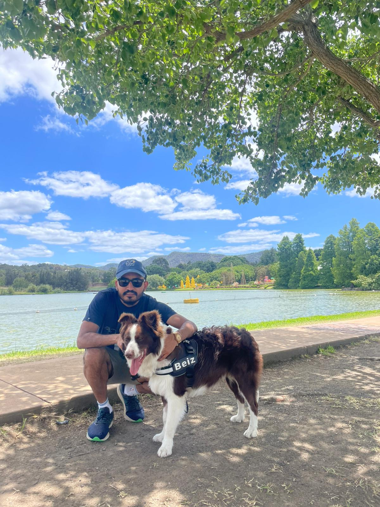
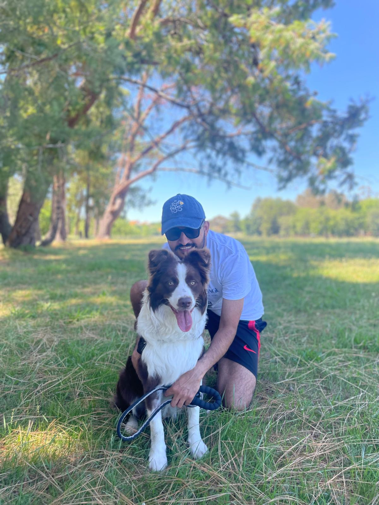

Purav Mehta
CA · GAICD · AI
I'm a Chartered Accountant and GAICD based in Canberra, Australia. I bridge the worlds of finance, governance, data science and AI automation — building tools that turn complex numbers into clear decisions. and yes, that's Beiz (pronounced BAYZ) — my border collie. Watching Beiz work taught me more about focus, instinct and persistence than any textbook. A border collie doesn't half-do anything. That's the standard I hold my work to. That's TheBeizWay — my border collie who keeps me grounded when the models get complicated.

Purav & Beiz (BAYZ) — Canberra

Purav Mehta CA GAICD

Beiz (BAYZ) 🐾
Bridging Finance, Risk,
Data & AI Automation
Chartered Accountant and GAICD with deep expertise in data science, AI automation, and financial modelling — turning complex numbers into clear decisions.